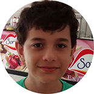

02 Maio, 2015

Renato
Ver fotosAinda que eu falasse as línguas dos homens e dos anjos, se não tiver amor, sou como o bronze que soa, ou como o címbalo que retine. Mesmo que tivesse o dom da profecia, e conhecesse todos os mistérios e toda a ciência; Mesmo que tivesse toda a fé, a ponto de transportar montanhas, se não tiver amor, não sou nada. Ainda que distribuísse todos os meus bens em sustento dos pobres, e ainda que entregasse o meu corpo para ser queimado, se não tiver amor, de nada valeria!
O amor é paciente, o amor é bondoso, não tem inveja. O amor não é orgulhoso.
Não é arrogante. Nem escandaloso. Não busca os seus próprios interesses, não se irrita, não guarda rancor, não se alegra com injustiça, mas se rejubila com a verdade. Tudo desculpa, tudo crê, tudo espera, tudo suporta.
(I Cor 13, 1-7)Fotos Daniela
Fotos Turra
Sobre o casal
Estamos aqui para dividir um pouco da nossa história de amor com todos vocês, familiares e amigos, que nos acompanham desde o começo e até mesmo bem antes que eu e o Turra nos encontrássemos nessa estrada da vida!!
Quem conviveu com a gente desde o comecinho de tudo sabe que não foi fácil...rs mas olha só que benção de DEUS, estamos aqui agora, praticamente 10 anos depois, pertinho do nosso casamento, nosso grande dia!! E para vocês que estão vivendo esse sonho e compartilhando cada momento e cada detalhe com a gente.. aqui vai um pouquinho de nós...
Nós sempre nos encontrávamos em festas, churrascos, aniversários e tudo mais, mas nunca havíamos conversado, tínhamos amigos em comum, frequentávamos os mesmos lugares.. enfim, eramos dois jovens vivendo na mesma cidade mas com pensamentos diferentes, apenas uma coisa era igual, o coração fechado, sem vontade e com medo do amor...!!
A Dani tinha 18 anos, estava apaixonada pela irmãzinha que tinha acabado de nascer, gostava de festa, sair, dar risada, se divertir com as amigas e as vezes até sonhava com um príncipe..rs Já o Turra tinha 20 anos, gostava também de tudo isso, mas ele queria aproveitar a vida sem pensar em relacionamentos sérios..rs ele até já tinha tentado conhecer ela melhor, mas ela não deu chance, achava que eles eram muito diferentes...
Foi que em um desses encontros de olhares a Dani resolveu reparar melhor naquele moço...rsrss mas também não falou nada pra ninguém. Mas mau sabia eles, que naquele momento DEUS já estava agindo na vida dos dois, colocando uma amiga entre eles, que deu um jeitinho, inventou algumas histórias...rsrss para que finalmente eles pudesse se conhecer e conversar..!!
E foi aí que tudo começou, no dia 26 de março de 2005 marcamos nosso encontro, em um baile que aconteceria na cidade, era o Baile da Aleluia!! Foi mais ou menos as 2:30 da manhã quando nos encontramos, nunca vamos nos esquecer da música que tocou em nosso primeiro beijo... foi um encontro realmente inesquecível.. presente do céu... se fechamos nossos olhos podemos lembrar de cada detalhe, como se estivéssemos lá ainda..
Nunca tínhamos conversado, mas naquela noite a sensação era que já nos conhecíamos a vida toda... a gente costuma brincar dizendo q foi "amor a primeira conversa"...rs ficamos juntos o resto da noite no baile, conversando, dando risada... e nos outros dias também nos encontramos e inevitavelmente fomos criando uma relação.
Para Dani era um namoro, mas para o Turra, ele dizia que ainda não estava preparado para isso...rs Quem nos acompanhou sabe tudo o que passamos, mas Deus mostrou mais uma vez sua presença em nossas vidas... pois muito antes que nossos pais sonhassem com a nossa existência, Ele já havia planejado tudo, tinha traçado que seriamos um para outro, por toda vida.
Entre idas e vindas durante 1 ano mais ou menos, graças a essa força vinda do céu, persistimos mesmo em meio a tanta dificuldade.. tantos puxões de orelha que levamos de nossas famílias, amigos e amigas...rs Mas tinhamos mesmo que passar por tudo isso, para que hoje pudessemos sentir essa felicidade plena... tudo foi aprendizado e serviu para que nosso amor se tornasse forte e eterno... pois esse sentimento resistiu a tudo e se fortaleceu com o tempo.. afinal, toda história de amor é assim!!
Nesses últimos 10 anos Vivemos os melhores dias, meses... a melhor época de nossas vidas um ao lado do outro.. amadurecemos, nos conhecemos, aprendemos a conviver e admirar até mesmo os defeitos um do outro, passamos a fazer parte de uma só família..
Acompanhando cada momento de tristesa e alegria.. nos tornamos amigos, confidentes, nos respeitamos, aprendemos a ouvir antes de falar, passamos a nos maravilhar com as nossas conquistas, viajamos, nos divertimos, fomos em festas, dançamos, brincamos, corremos até cansar, andamos de mãos dadas, conhecemos pessoas, nos despedimos de algumas... comemos, engordamos..rs estudamos, trabalhamos, rimos das mesmas coisas, brigamos, perdoamos e sempre um do lado do outro, dando apoio quando precisavamos, fomos as nossas melhores companhias, passamos a ser praticamente um só, a dor de um é a dor do outro e a felicidade também!!
E hoje podemos dizer sem dúvida que amamos cada detalhe, cada fio de cabelo, cada chatisse e cada bondade, cada imperfeição do outro!! Não lembramos como era nossas vidas antes de 2005, parece que não existia Daniela sem Renato e nem Renato sem Daniela!! Passamos a sonhar e viver os mesmos sonhos e traçamos os mesmos objetivos.. estamos subindo cada degrau juntos, batalhando para realizar tudo!!
E a melhor parte, o principal que conquistamos e descobrimos juntos foi o amor de Deus por nós, pois foi quando tivemos esse encontro pessoal com Jesus e entregamos toda nossa vida a Ele, e consagramos a nossa vida a Maria, que tudo foi abençoado, e tudo passou a ter sentido em nossos corações!!
Hoje somos pessoas diferentes, melhores e muito mais realizados, por isso rezo para que sempre tenhamos essa intercessão do Espirito Santo de Deus.. para que tudo caminhe sempre nesse caminho sonhado e trilhado por Ele!!
E foi assim que no começo de 2013 marcamos nossa data de casamento, para o dia 02 de maio de 2015, e estamos mais felizes do que nunca, muitos preparativos, sonhos e ansiedade aumentado, mas que seja sempre cada detalhe abençoado!!
Daqui um tempo nosso grande dia vai chegar.. o dia mais feliz de nossas vidas e queremos compartilhar com todas pessoas que amamos nossa felicidade, que não é pouca...rs por isso deixamos aqui um poquinho da nossa história de amor, que parece um sonho, mas é real!!
"... Eu agradeço a DEUS o dia em que peguei na sua mão..."
Sobre os Pais

Sônia e Walter
Ver mensagemA vocês Pai e Mãe que me deram a vida e me ensinaram a vivê-la com dignidade, não bastaria um obrigado. A vocês Pai e Mãe, que iluminaram os meus caminhos com afeto e dedicação para que eu passasse por eles sem medo e cheio de esperança, não bastaria um muito obrigado. A vocês, que se doaram por inteiros e renunciaram aos seus sonhos, para que, muitas vezes, eu pudesse realizar os meus. A vocês, que estiveram sempre comigo, presentes ou no coração, não bastaria dizer Obrigado e sim um Muito mais Muito Obrigado!!! Amo Vocês Ontem Hoje Amanhã e Sempre a minha Vida é Vocês.
Uma nova fase vai se iniciar em nossas vidas, tanto na minha como na de vocês, estou dando um grande passo em rumo a esse sonho que eu sempre tive chamado casamento e com uma noiva Linda escolhida por Deus para mim, e com certeza eu não chegaria até aqui se não fosse o apoio e dedicação de vocês.
Sei também, que a partir do dia 02/05/2015... Deixarei o conforto de nossa casa, a comidinha pronta, a roupa passada, o abraço inesperado ao chegar as vezes cansado do trabalho... Deixarei o meu "NINHO" para alcançar voos em novos ares, mas continuarei sempre precisando de vocês. Só de Escrever essa mensagem já estou sentindo falta do que deixarei para trás, mas sei também que Deus reserva não só para mim, mas como para a Dani e Para vocês também um futuro iluminado e abençoado por Deus. Já estou arrependido de ter aproveitado tão pouco a companhia de vocês, de não termos conversado mais, abraçado mais, dito mais a vocês o quanto são importantes e o quanto eu AMO VOCÊS o quanto devo toda a minha Vida a Vocês, as palavras às vezes não conseguem expressar o tamanho do meu Amor por vocês Pai e Mãe, mas sei também que essa mensagem não é uma despedida, Graças a Deus continuarei morando na mesma cidade e vendo vocês todos os dias.
Mas quero aproveitar esse espaço para lhes dizer, pois se há um amor verdadeiro e eterno, esse amor é de PAI E MÃE. Sou parte de vocês, e vocês fazem e sempre farão parte de mim. Meu jeito de ser, meus valores, minha educação e até meus objetivos vem da forma como vocês me criaram. E pela minha criação, Eu só tenho que agradecer Pai e Mãe se hoje sou uma pessoa Feliz, iluminada e Abençoada por Deus devo tudo a Vocês que me ensinaram sempre o Caminho Certo!!! Tenho orgulho em falar que sou filho do Walter e da Sônia, em trazer o sobrenome Turra e Bueno que são minhas origens. Obrigado por tanto amor, tanta dedicação, tanto carinho e cuidado, pela paciência e pelos ensinamentos!!! Desculpa à ausência, a impaciência, a falta de compreensão muitas vezes...!
AMOOOOO MUITO VOCÊS!!! VOCÊS SÃO TUDO TUDO PRA MIM MEUS PAIS!! AMOOOO VOCÊS ETERNAMENTE!!!
Nair e Evaldo
Ver mensagemMãe e Pai...
O que dizer sobre vocês??!!
Tudo o que eu falar ou escrever é pequeno, é minimo comparado com o tamanho do amor e da gratidão que sinto por vocês!!
Devo minha vida, minha existência, minha saúde, educação, felicidade... enfim devo tudo o que sou e tudo o que tenho a vocês.. pois sem vocês eu não existiria, se vocês dois não tivessem dado esse SIM a JESUS pelo dom da vida e ter me permitido nascer eu não estaria aqui!! E para ser sincera, DEUS não poderia ter escolhido melhores pessoas para me gerar e criar, sou muito abençoada por ter vocês como meus pais.. conheci o que é o AMOR através de vocês.. anjos em minha vida!!
Por isso quero agradecer primeiramente a DEUS por ter me dado vocês como meu pai e minha mãe.. foi com vocês que aprendi a falar, andar, tive a melhor infância do mundo, sempre com minhas melhores companhias que eram vocês, tive as melhores irmãs, minhas amigas e companheiras pra toda vida, e tudo graças a DEUS e a vocês!!
Não sei o que dizer, não sei o que fazer para poder agradecer por tudo, por todos esses anos de dedicação, de educação, de amizade, de sim e de não, de broncas que me ajudaram a crescer e amadurecer, de palavras amigas, palavras que confortam, que aquecem meu coração, que me fizeram ser uma pessoa melhor, palavras que levarei por toda vida, lembranças que são só minhas, e posso garantir que são as melhores!!
Agradeço por vocês serem assim, do jeitinho que vocês são, sempre um completando o outro, tudo o que eu preciso encontro em vocês dois.. agradeço por acreditarem em mim, mesmo quando ninguém mais acreditava.. agradeço por terem me proporcionado viver nessa família maravilhosa, ao lado de pessoas que são anjos em minha vida.. agradeço de coração e por toda minha vida vou agradecer, não vou me cansar!!
AMO VOCÊ MÃE.. minha amiga, confidente, meu amor, minha companheira, pessoa leal e sincera, que chora e sorri comigo, sua dor é minha dor e sua falicidade é a minha... obrigada por tudo, pelo abraço acolhedor e aconchegante, pelo sorriso que me da vida, que é a luz que me guia.. TE AMO MEU GRANDE E ETERNO AMOR, MINHA RAINHA, A MAIS LINDA E MELHOR DE TODAS AS MÃES, obrigada por tudo!!
AMO VOCÊ PAI.. meu amigo, companheiro, herói, meu papai noel...rs obrigada por ser assim, esse grande Homem, esse exemplo, diferente de todos os outros, obrigada pela paciência, pelo abraço apertado, obrigada por ser você.. TE AMO MEU PRIMEIRO AMOR, MEU ANJO LINDO, MEU REI.. O MAIS LINDO E MELHOR PAI DO MUNDO!!
Vocês dois são exemplos que quero seguir por toda vida e em meu casamento, foram meus primeiros catequistas, foi através de vocês que conheci o céu.. Mãe representante de MARIA, minha mãezinha.. Pai representante de JOSÉ, meu paizinho.. serei eternamente grata por ter vocês comigo, por terem doado suas vidas para nos dar conforto, carinho e amor!!
OBRIGADA DEUS, por ter me dado eles como meus pais, rezo para que os abençoem e que JESUS e MARIA estejam com vocês por todo caminho!!
AMO VOCÊS.. MINHA VIDA, MEU AMOR ETERNO.. Nair e Evaldo(Xexéu)!!
Sobre as Irmãs
Danila, Duda e Fernanda
Agradecemos a DEUS todos os dias pela vida de vocês, nossas irmãs!!
Nossos amores, pedacinhos da gente.. os irmãos são nossos primeiros e melhores amigos, aqueles com quem sabemos que podemos contar em todas as horas, aqueles que DEUS enviou para nossas vidas para nos dar força, encher de luz e alegria todos os nossos dias... irmãos são aqueles que nos ligam ao nosso passado, a nossa família, as nossas histórias mais intimas!!
E tão perto de realizar um dos nossos maiores sonhos, não poderiamos de deixar aqui os nossos agradecimentos a vocês, por todas as lembranças, brincadeiras, artes, broncas, choros, brigas, reconciliação, brinquedos compartilhados, ralados nos joelhos, choro de madrugada, fraldas trocadas, idas e vindas da escola, da rua, das baladinhas... enfim.. obrigada irmãs, por cada palavra dita, por cada abraço, cada beijo... por tudo!! Agradecemos primeiramente a DEUS por ter nos dado vocês como nossas irmãs.. as melhores que poderiamos ter!!
E é bênção divina poder ter vocês ao nosso lado... AMAMOS VOCÊS
Padrinhos
Ver mensagemPadrinhos são anjos que DEUS coloca em nosso caminho, e são identificados rapidamente por nossos corações!!
São aquelas pessoas que estaram rezando por nós por toda vida, cuidando para que nossa amizade e nosso amor esteja cada vez mais forte..!!.. enfim, escolhemos 22 casais para estarem ao nosso lado, pertinho de nós nesse dia que DEUS escolheu pra gente.. entre eles amigos que são mais que irmãos, irmãos e parentes que são muitoooo mais que amigos !!
Ohhhhh 22 casais??rsrss pois é.. e confesso que não foi fácil, pois se pudessemos escolheriamos uns 30..rsrss são tantas pessoas queridas e amadas, que fizeram parte da nossa vida e da nossa história.. mas as pessoas que escolhemos de uma maneira ou de outra representarão todas as outras que também estarão presentes para partilharem cada momento!!
Amamos vocês!! que JESUS e MARIA passem a frente de tudo..
Grande beijoooooo**
-
AndersonDanila
-
BrazJulia
-
ClaudineiMaria
-
TiagoCida
-
RenatoFabíola
-
BrunoNatália
-
RenatoJovana
-
CarlinhosThairine
-
Marcos
 Ellen
Ellen -
JuniorViviana
-
GiovanniJeanessa
-
ToratiFernanda
-
ArnaldoIvani
-
LourivalEdna
-
DirceuEdnéia
-
GersonNoely
-
LeonardoDébora
-
 JuniorPaula
JuniorPaula -
FernandoFúlvia
-
RafaelJaqueline
-
FernandoJosi
-
FábioÉrica
Pajens e Daminhas
Crianças são anjos de DEUS!! Por isso escolhemos esses amores para estarem ao nosso lado, iluminando ainda mais esse dia!! amamos vocês
-
RaulGabriel
-
Maria EduardaFernanda
-
BrunaLuana
Cerimônia e Recepção
A Cerimônia será realizada na Igreja Matriz de São José, no dia 02, de maio de 2015, às 20h15.
Logo após os convidados serão recepcionados no Clube das Bandeiras.
Recepção